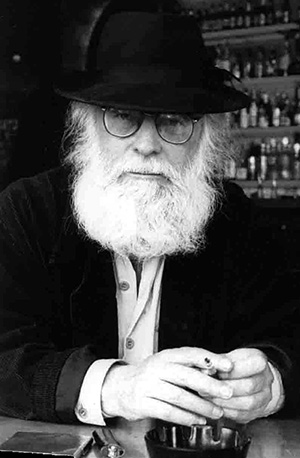
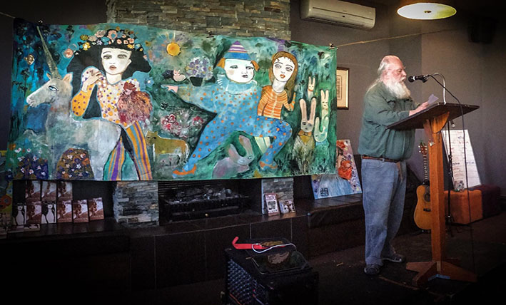

|
K.F. Pearson |
||
 |

K.F.
(Kevin) Pearson was born in Caulfield, Melbourne in 1946, and grew up
on the working class side of the Racecourse. He has survived fire,
lightning and gunshots, the last whilst head gardener at Koonunga Golf
Course. He has been a steel tier in the building industry, once
established a crosswords company and has worked in printing and as a
publisher. He has also been an art critic, journalist, editor and
anthologist. He returned to his ‘grey city’ of Melbourne after eighteen
years away, including in the South Pacific and Adelaide. Black Pepper
was founded in late 1994 by K.F. Pearson and Gail Hannah, initially in
conjunction with Australian Scholarly Publishing. It is now an
established and truly independent small publisher which has made a
significant mark on Australian literature. K.F. Pearson’s books include: Friendly Street Poetry Reader No. 5, (with Nancy Gordon) Messages of Things (Friendly Street Poets, 1984) The Orange Tree: South Australian Poetry to the Present Day (co-editor with Christine Churches) (Wakefield Press, 1986) The Penguin Book of Christmas Poems (co-editor with Chris Mooney) (Penguin, 1992) The History of Colour (Angus and Robertson, 1992) The Heights of Macchu Picchu by Pablo Neruda (translator, Mattoid, 1992) Mosaics & Mirrors; Composite Poems (with Jennifer Harrison and Graham Henderson) Passion & War, A Flamenco Libretto, incorporating his translations from the Spanish The Apparition’s Daybook Melbourne Elegies, being an adaptation and extension of Goethe’s Römische Elegien. The Apparition at Large He has received two writing grants from the Australia Council, as well as grants from Arts Victoria and Arts South Australia. Kevin Pearson’s elegant poetry spills from a cornucopia of pictures and ideas. One experiences not a tug at the heart-strings but a colourful mind at work. It is sheer joy. Rosemary O’Grady The Advertiser, 4 July 1987  Kevin reading at the Dan, 25 February 2017 Photo: Joe Dolce - Backdrop: lyn Van Hek Back to top |